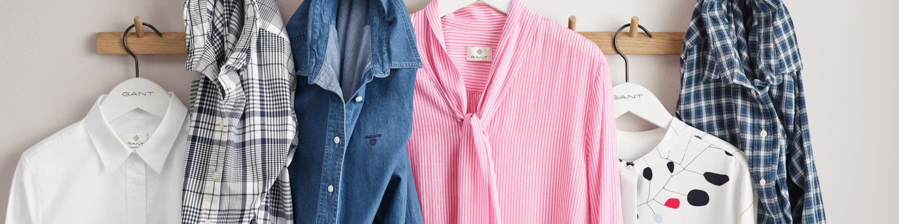

<div class="container text-center ">
  <owl-carousel-o [options]="customOptions">
    <ng-template carouselSlide>
      
    </ng-template>  
    <ng-template carouselSlide>
      
    </ng-template>  
    <ng-template carouselSlide>
      
    </ng-template>  
  </owl-carousel-o>
</div>